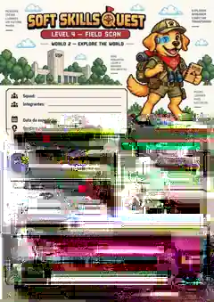

Mostra Cultural
2026
Encontre estudantes e também explore os trabalhos, salas e horários da Mostra.
Seu guia de visitação
No dia 14/11, esta área mostrará automaticamente qual bloco está acontecendo naquele momento.
Projetos em destaque
Percursos que ganham destaque por sua trajetória, linguagem ou forma de apresentação. Alguns ficam abertos durante todo o evento; outros acontecem nos blocos programados.
Soft Skills Quest
Uma jornada gamificada por mundos, missões, personagens e desafios de comunicação, exploração e criação.
Exposição permanente • 10h00–13h00Entrar na Quest →
🎤TED-Ed Student TalksIdeias autorais dos estudantes transformadas em talks.Exposição permanente • 10h00–13h00Assistir →Explore a Mostra
Procure diretamente um estudante ou explore a Mostra por projeto, trabalho, horário e sala.
Mostra 2026
Ao adicionar este guia à Tela de Início, este é o ícone oficial do aplicativo.
Base de dados
Informações técnicas temporárias para acompanhamento da montagem do guia. Este bloco será retirado da versão final.
Encontrar na Mostra
Digite um nome ou explore por projeto, horário e sala.
Ficha do estudante
Informações de apresentação na Mostra.
Explorar a Mostra
Escolha um projeto ou percurso e veja seus trabalhos.
Onde você quer começar?
Trabalhos
Projetos e grupos vinculados.
Trabalho
Grupo, integrantes e programação.
Programação
Exposições permanentes e apresentações distribuídas em dois blocos.
Salas da Mostra
Escolha uma sala para ver os trabalhos programados ali.
A planta real será incorporada posteriormente. A navegação por sala já funciona.
Projetos em destaque
Percursos e produções que ganham destaque na Mostra Cultural.